library(tidyverse)
library(igraph)
library(tidygraph)
library(sna)STOCKS Act
final_project_697E
What stocks do our senators have in common?
Introduction
Since 2012, the STOCK Act (Stop Trading on Congressional Knowledge) has given the public insight into the ethically dubious practice of congressional insider trading. Since congresspeople sit on many committees where they might gain inside information, it’s widely acknowledged that they have an unfair advantage over others in the stock market (1). Instead of making trades outright illegal for congresspeople, the STOCK Act (among many other things) requires them to disclose purchase and sales of stocks, bonds, and securities to the public. (2)
It’s not as if insider trading has stopped. An industry has naturally sprung up around the data provided by the STOCK Act, operating on the principle that if the stock is good enough for a member of congress, it should be good enough for you, too. (3)
Famously, in 2020, senators Kelly Loeffler (R-GA), David Perdue (R-GA), and John Hoeven (R-ND) were found to have violated the STOCK act by using insider knowledge of the growing seriousness of the COVID pandemic, with little consequence. (5,6,7) The STOCK act’s rules about timely disclosures have been loosely enforced, with some congresspeople ignoring the rules entirely. (8)
Indeed, a 2022 New York Times investigation found that more than half of congress members sat on committees that gave them unique insight into the industries they were investing in. (4)
Network Analysis
I have built a few different networks where congresspeople are nodes and whether they have a stock in common are edges. The number of stocks they have in common are weights and their committee assignments are node attributes. This is a one-mode projection.
Among my research questions are:
Who is the most connected? What communities can be detected?
What effect does political affiliation have on position in the network? Are Republicans and Democrats more alike than one would think in terms of investment strategies?
What effect do node-level measures of centrality have on committee membership? What effect does committee membership have on, for example, degree?
senators_data <- read_csv("SenatorCleaned.csv")
house_data<- read_csv("all_transactions.csv")
committees<- read_csv("committee-membership-current.csv")Using separate datasets for both the House and Senate, I find network statistics for each node and do hypothesis testing based on committee assignment and partisanship.
Senate investments
My project is primarily focused on House of Representatives data, but I have included Senate investments to show that my process can apply to both chambers. I will briefly demonstrate a few descriptive measures for the Senate data, then continue on the House data below.
Data preparation
My senate data comes from this source, found on Kaggle (9). It was collected by the creator with a reproducible method (using selenium) so someday collecting newer data is possible, if necessary.
Here, my code finds the Ticker values (e.g., AAPL) for each senator’s investment, then creates an edgelist between them and another senator as long as they both are invested in the same Ticker.
#Filter data for valid Ticker values
filtered_data <- senators_data %>%
filter(!is.na(Ticker) & Ticker != "" & Ticker != "--")
#Find representatives who share the same Ticker
shared_ticker <- filtered_data %>%
group_by(Ticker) %>%
summarize(representatives = list(Name)) %>%
filter(length(representatives) >= 2)
#Create combinations of representatives within each shared Ticker group
edge_list <- shared_ticker %>%
mutate(representative_combinations = map(representatives, ~ {
if (length(.x) >= 2) t(combn(.x, 2)) else NULL
})) %>%
unnest(representative_combinations) %>%
select(-representatives) %>%
distinct()
#Correct the character matrix issue that resulted from unnest()
edge_list <- edge_list %>%
mutate(from = edge_list$representative_combinations[,1], to = edge_list$representative_combinations[,2]) %>%
select(-representative_combinations)
#Get count of stocks owned by both individuals, counting pairwise combinations as one relationship
edge_list <- edge_list %>%
mutate(combination = paste0(pmin(from, to), pmax(from, to))) %>%
group_by(combination) %>%
mutate(count = n()) %>%
ungroup() %>%
select(-combination)
#Remove duplicate pairwise combinations
edge_list <- edge_list[!duplicated(paste(pmin(edge_list$from, edge_list$to), pmax(edge_list$from, edge_list$to))), ]
#Select just relevant stuff
edge_list <- edge_list %>% select(from, to, count)
#Create network graph
senate.ig <- graph_from_data_frame(edge_list, directed = FALSE)
#Remove self-loops
senate.ig <- simplify(senate.ig, remove.multiple = FALSE)
#Set the edge attribute for the number of stocks in common
#E(house.ig)$count <- edge_list$count
#Set count as weight
E(senate.ig)$weight <- edge_list$countWarning in eattrs[[name]][index] <- value: number of items to replace is not a
multiple of replacement length# Plot the network graph
plot(senate.ig, edge.arrow.size = 0.5, vertex.label.cex = 0.8)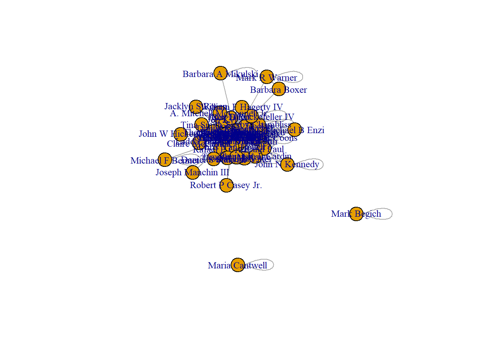
The resultant graph is a hairball, but I will segment it later based on degree.
Description
I have gone through some lengths to make this network a weighted, single-mode one. It is not directed:
is_bipartite(senate.ig)[1] FALSEis_directed(senate.ig)[1] FALSEis_weighted(senate.ig)[1] TRUEDyad Census
Therefore it’s fully expected that there are no asymmetric dyads, as this is a binary graph:
igraph::dyad.census(senate.ig)$mut
[1] 567
$asym
[1] 0
$null
[1] 973Triad Census
Here is a visualization of the types of triads present:
triad_chart_func <- function(data) {
triad_data <- igraph::triad_census(data)
triad_types <- c(
'003' = 'A,B,C, empty triad.',
'012' = 'A->B, C, triad with a single directed edge.',
'102' = 'A<->B, C, triad with a reciprocated connection between two vertices.',
'021D' = 'A<-B->C, triadic out-star.',
'021U' = 'A->B<-C triadic in-star.',
'021C' = 'A->B->C, directed line.',
'111D' = 'A<->B<-C.',
'111U' = 'A<->B->C.',
'030T' = 'A->B<-C, A->C.',
'030C' = 'A<-B<-C, A->C.',
'201' = 'A<->B<->C.',
'120D' = 'A<-B->C, A<->C.',
'120U' = 'A->B<-C, A<->C.',
'120C' = 'A->B->C, A<->C.',
'210' = 'A->B<->C, A<->C.',
'300' = 'A<->B<->C, A<->C, complete triad.'
)
names(triad_data) <- triad_types
triad_data <- data.frame(triad_data)
triad_data$triad_type <- row.names(triad_data)
ggplot(triad_data, aes(x = triad_type, y = triad_data)) +
geom_bar(stat = "identity", fill = "steelblue") +
coord_flip() +
labs(x = "", y = "Frequency",
title = "Frequency of Triad Types") +
theme_classic()
}And plot the result:
triad_chart_func(senate.ig)Warning in igraph::triad_census(data): At core/misc/motifs.c:1165 : Triad
census called on an undirected graph.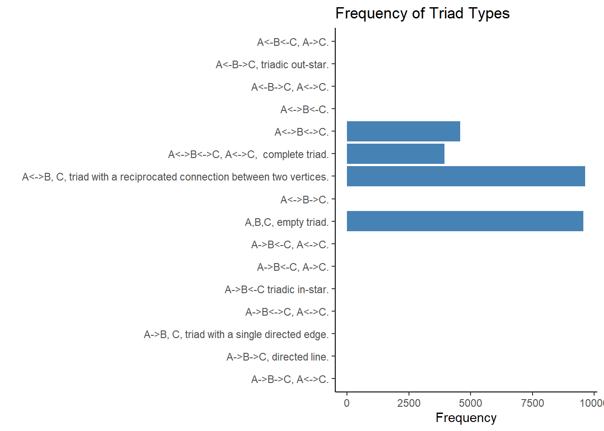
Transitivity
A triad involving actors \(i\), \(j\), and \(k\) is transitive when \(i \rightarrow j\), \(j \rightarrow k\), and \(i \rightarrow k\) (Wasserman and Faust, 1994).
Here is the global transitivity:
transitivity(senate.ig)[1] 0.7213385And here is some selected transitivity of certain senators:
senators_of_interest <- V(senate.ig)[c("Barbara Boxer","Claire McCaskill", "Tom Coburn")]
transitivity(senate.ig, type="local", vids=senators_of_interest)[1] 0.0000000 1.0000000 0.7684729Distances (path lengths)
The average geodesic in this network is about 3.
average.path.length(senate.ig,directed=F)[1] 2.988819Here’s an example path length:
distances(senate.ig,"James M Inhofe","Barbara Boxer") Barbara Boxer
James M Inhofe 2Components, Size
This indicates there two senators that have no stocks in common with others - those are Mark Begich (D-AK) and Maria Cantwell (D-WA). Accordingly, that means there are three components.
igraph::components(senate.ig)$no #Number of components[1] 3igraph::components(senate.ig)$csize #Size of each component[1] 54 1 1Degrees
Naturally, for now while I have a binary network, there is no in-degree or out-degree - just total degree. This table shows the most prominent senators, ranked in term of degree.
We find that a few senators are most prominent in degree.
total_degrees <- igraph::degree(senate.ig)
node_degrees <- data.frame(node = V(senate.ig)$name, total_degree = total_degrees)
sorted_nodes <- node_degrees[order(-node_degrees$total_degree), ]
sorted_nodesNotice the basically uniform distribution of total_degree. That is an interesting phenomenon we’ll come back to when looking at the House data.
Closeness Centrality
Most senators look the same in most measures of centrality:
head(igraph::closeness(senate.ig)) Sheldon Whitehouse James M Inhofe Robert P Corker Jr. Thomas R Carper
0.006849315 0.008130081 0.008333333 0.007751938
Thomas H Tuberville Kelly Loeffler
0.007575758 0.008196721 Before I get into too much description of the Senate graph, however, I would like to introduce the more interesting dataset:
House of Representatives
This was collected with data found here:
House Stock Watcher - See What Your Representative Is Trading
This data is altogether more useful, since it includes the representative’s party directly in the data.
Pre-processing
Even though it came from a different place on the internet, I can process it in virtually the same manner as before - just a few fields were changed:
# Filter data for valid Ticker values
filtered_data <- house_data %>%
filter(!is.na(ticker) & ticker != "" & ticker != "--")
# Find representatives who share the same Ticker
shared_ticker <- filtered_data %>%
group_by(ticker) %>%
summarize(representatives = list(representative)) %>%
filter(length(representatives) >= 2)
# Create combinations of representatives within each shared Ticker group
edge_list <- shared_ticker %>%
mutate(representative_combinations = map(representatives, ~ {
if (length(.x) >= 2) t(combn(.x, 2)) else NULL
})) %>%
unnest(representative_combinations) %>%
select(-representatives) %>%
distinct()
#Correct the character matrix issue that resulted from unnest()
edge_list <- edge_list %>%
mutate(from = edge_list$representative_combinations[,1], to = edge_list$representative_combinations[,2]) %>%
select(-representative_combinations)
#Get count of stocks owned by both individuals, counting pairwise combinations as one relationship
edge_list <- edge_list %>%
mutate(combination = paste0(pmin(from, to), pmax(from, to))) %>%
group_by(combination) %>%
mutate(count = n()) %>%
ungroup() %>%
select(-combination)
# Remove duplicate pairwise combinations
edge_list <- edge_list[!duplicated(paste(pmin(edge_list$from, edge_list$to), pmax(edge_list$from, edge_list$to))), ]
# Select just relevant stuff
edge_list <- edge_list %>% select(from, to, count)
# Create network graph
house.ig <- graph_from_data_frame(edge_list, directed = FALSE)
# Remove self-loops
house.ig <- simplify(house.ig, remove.multiple = FALSE)
# Set the edge attribute for the number of stocks in common
#E(house.ig)$count <- edge_list$count
#Set count as weight
E(house.ig)$weight <- edge_list$countWarning in eattrs[[name]][index] <- value: number of items to replace is not a
multiple of replacement length# Plot the network graph
plot(house.ig, edge.arrow.size = 0.5, vertex.label.cex = 0.8)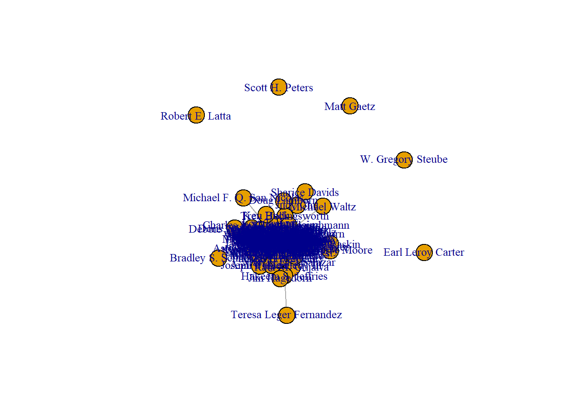
Remember that we are not looking at all members of congress - we’re just looking at members of congress that disclosed stock purchases or sales on publicly-listed stocks, following rules set up by the STOCK Act. If we were looking at a universe of cases, we would see all members of the House, including those that don’t trade stocks.
The isolates seen here are representatives who purchased stocks but had no stocks in common with any other representatives.
Adding committee assignments
I wished to tack on commitee assignments to this data. A dataset of congressional committee assignments is available here:
Congressional Committees - dataset by govtrack | data.world
Since all congressional data I come across seems to be scraped from the same government websites, matching on name is straightforward:
house_nodes <- as_data_frame(house.ig, "vertices")
house_committees <- house_nodes %>% left_join(committees, by = 'name') %>%
mutate(thomas_id = str_remove(thomas_id, "\\d+")) %>%
select(name, thomas_id) %>%
distinct() %>% pivot_wider(names_from = thomas_id, values_from = thomas_id, values_fn = length, values_fill = 0) %>%
select(-'NA')
pivoted_data <- as.data.frame(house_committees)
# Create a named list of attribute values from the pivoted data
node_attrs <- as.list(pivoted_data[, -1])And this loop writes those attributes in “one-hot” format to vertex (node) attributes in the igraph object:
for (i in names(node_attrs)) {
house.ig <- set_vertex_attr(house.ig, i, index = V(house.ig), node_attrs[[i]])
}house.igIGRAPH 6a919c9 UNW- 164 4846 --
+ attr: name (v/c), HSFA (v/n), HSHM (v/n), HSSY (v/n), HSGO (v/n),
| HSIF (v/n), HSED (v/n), HSRU (v/n), HSSO (v/n), HSWM (v/n), HSAP
| (v/n), HLIG (v/n), HSAG (v/n), HSAS (v/n), HSBU (v/n), JCSE (v/n),
| HSII (v/n), HSBA (v/n), HSPW (v/n), HSHA (v/n), HSJU (v/n), JSLC
| (v/n), HLZI (v/n), HSSM (v/n), HSVR (v/n), JSEC (v/n), count (e/n),
| weight (e/n)
+ edges from 6a919c9 (vertex names):
[1] Peter Meijer --Peter Welch Virginia Foxx --Kenny Marchant
[3] Virginia Foxx --John B. Larson Kenny Marchant--John B. Larson
[5] Peter Meijer --Greg Gianforte Peter Meijer --Josh Gottheimer
+ ... omitted several edgesAdding political party
Adding political party will be helpful for visualization and, later on, hypothesis testing.
# For viewing edge attributes
vertices_df <- as_data_frame(house.ig, "vertices")
vertices_dfvertices_df_joined <- house_data %>%
filter(!is.na(ticker) & ticker != "" & ticker !="--") %>%
select(representative, party) %>%
distinct() %>%
inner_join(vertices_df, by=c('representative'='name'))
vertices_df_joined$party[is.na(vertices_df_joined$party)] <- "Missing"# Create an empty attribute vector for the party attribute
party_attr <- rep(NA, vcount(house.ig))
# Find the vertices in the vertices_df_joined data frame
matching_vertices <- match(V(house.ig)$name, vertices_df_joined$representative)
# Assign the correct party values to the attribute vector
party_attr[!is.na(matching_vertices)] <- vertices_df_joined$party[na.omit(matching_vertices)]
# Set the party attribute for the vertices in house_with_party.ig
house.ig <- set_vertex_attr(house.ig, "party", index = V(house.ig), party_attr)If you are curious, here is a dataframe representation of the igraph object as it currently is, using dummy variables for each type of committee, and finally including party at the end:
# For viewing edge attributes
vertices_df <- as_data_frame(house.ig, "vertices")
vertices_dfMeasures of centrality: House of Representatives
Degree
We see that judging simply by degree, Gilbert Cisneros (D-CA) is the most connected senator:
total_degrees <- igraph::degree(house.ig, mode = "total")
node_degrees <- data.frame(node = V(house.ig)$name, total_degree = total_degrees)
sorted_nodes <- node_degrees[order(-node_degrees$total_degree), ]
sorted_nodesSimilarly as to the Senate, the falloff in degree is very flat, not looking like a normal exponential curve. This ‘uniform distribution’ is interesting in itself.
Subgraphs
For visualization’s sake, the graph above is a hairball - very connected.
An intuitive way to reduce the players is to view only the most connected in terms of degree. I played around with some thresholds and chose 120.
This shows the most-connected players in terms of degree. Edges are number of stocks in common:
vertex_degrees <- igraph::degree(house.ig)
# Filter the vertex degrees based on count > 120
filtered_vertex_degrees <- vertex_degrees[vertex_degrees > 120]
# Calculate the logarithm of the degree of each filtered vertex
filtered_vertex_sizes <- log(filtered_vertex_degrees)*5
# Subset the graph to include only nodes with count > 120
filtered_house.ig <- induced_subgraph(house.ig, V(house.ig)[vertex_degrees > 120])
# Assign colors based on party
party_colors <- c("red", "lightblue", "yellow")
vertex_colors <- party_colors[match(V(filtered_house.ig)$party, c("Republican", "Democrat", "Libertarian"))]
# Plot the network graph with edge width varying by weight and vertex size varying by the log of the degree
plot(filtered_house.ig,
edge.arrow.size = 0.5,
vertex.label.cex = 0.8,
edge.width = E(filtered_house.ig)$weight / 10,
vertex.size = filtered_vertex_sizes,
vertex.color = vertex_colors)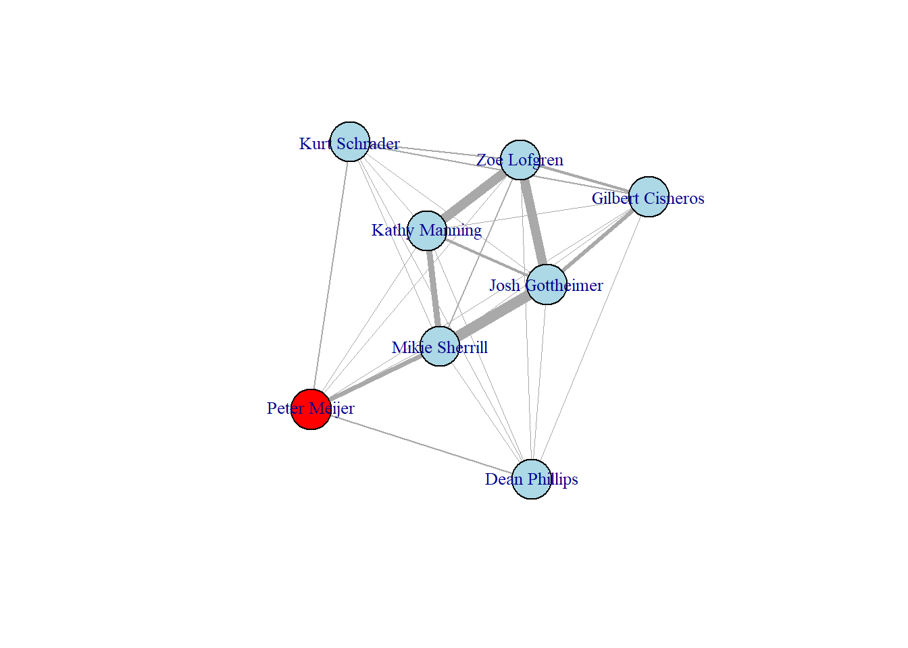
Interestingly, the most central nodes in terms of degree seem to be Democratic. When the threshold is set to 100, that distinction becomes a little less and the graph is still very connected:
filtered_vertex_degrees <- vertex_degrees[vertex_degrees > 100]
# Calculate the logarithm of the degree of each filtered vertex
filtered_vertex_sizes <- log(filtered_vertex_degrees)*2
filtered_house.ig <- induced_subgraph(house.ig, V(house.ig)[vertex_degrees > 100])
# Assign colors based on party (needs to be run again each time)
party_colors <- c("red", "lightblue", "yellow")
vertex_colors <- party_colors[match(V(filtered_house.ig)$party, c("Republican", "Democrat", "Libertarian"))]
# Plot the network graph with edge width varying by weight and vertex size varying by the log of the degree
plot(filtered_house.ig,
edge.arrow.size = 0.5,
vertex.label.cex = 0.8,
edge.width = E(filtered_house.ig)$weight / 10,
vertex.size = filtered_vertex_sizes,
vertex.color = vertex_colors)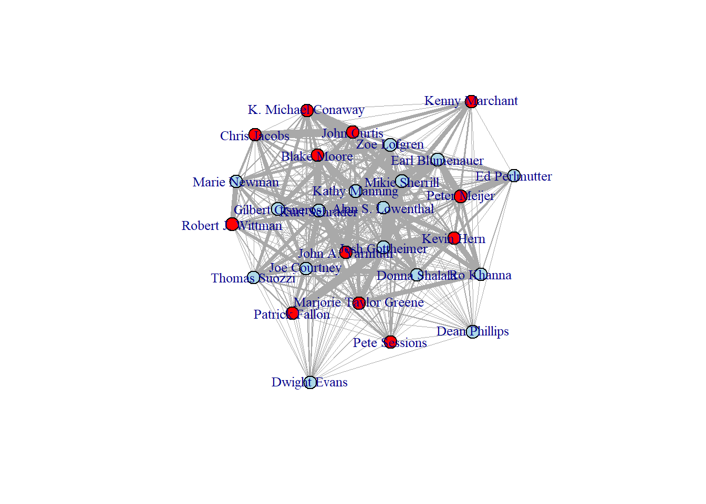
And the plot below shows the least connected nodes - those with degree of less than 40.
Vertex size is the log of that node’s degree, times 5 (for visualization purposes).
vertex_degrees <- igraph::degree(house.ig)
# Filter the vertex degrees based on count > 120
filtered_vertex_degrees <- vertex_degrees[vertex_degrees < 40]
# Calculate the logarithm of the degree of each filtered vertex
filtered_vertex_sizes <- log(filtered_vertex_degrees)*5
# Subset the graph to include only nodes with count > 120
filtered_house.ig <- induced_subgraph(house.ig, V(house.ig)[vertex_degrees < 40])
# Assign colors based on party
party_colors <- c("red", "lightblue", "yellow")
vertex_colors <- party_colors[match(V(filtered_house.ig)$party, c("Republican", "Democrat", "Libertarian"))]
# Plot the network graph with edge width varying by weight and vertex size varying by the log of the degree
plot(filtered_house.ig,
edge.arrow.size = 0.5,
vertex.label.cex = 0.8,
edge.width = E(filtered_house.ig)$count / 10,
vertex.size = filtered_vertex_sizes,
vertex.color = vertex_colors)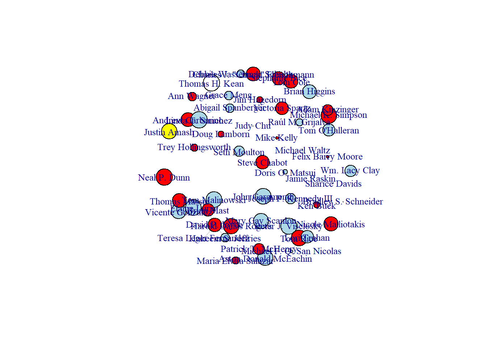
The few connections are between Republicans (edges may not be visible depending on the way you view it.).
Average path length
The average path length is 2.32, which is shorter that the ~3 length in the senate.
average.path.length(house.ig,directed=F)[1] 2.324576Network diameter (longest geodesic)
diameter(house.ig)[1] 9get_diameter(house.ig)+ 5/164 vertices, named, from 6a919c9:
[1] Judy Chu Earl Blumenauer Deborah K. Ross
[4] David Madison Cawthorn Michael Waltz And here is the longest geodesic.
Judy Chu is a California Democrat, and Michael Waltz is a Florida Republican. It’s interesting that, although we haven’t seen much of a split between the two parties politically so far, they can’t get more separated either ideologically or geographically!
Graph density
graph.density(house.ig)[1] 0.3625617Average node degree
mean(igraph::degree(house.ig))[1] 59.09756Distribution
As mentioned, the distribution of degree is mostly uniform:
degree_dist <- degree.distribution(house.ig)plot(density(igraph::degree(house.ig)))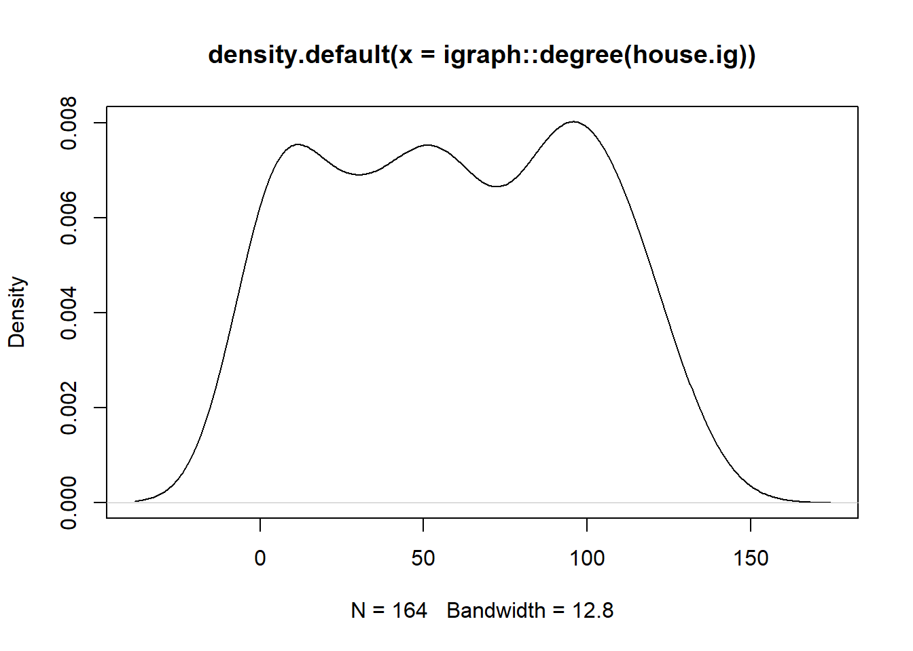
Interpretively, this means any node-level measure of degree is equally likely, which is somewhat puzzling. In most real-world networks, we would expect to see a ‘power law’ degree distribution unlike this.
This could be slightly explained by the nature of the dataset - degree is based on stocks purchased on the stock market, rather than relations between senators - and could explain why we don’t see a predictable structure as we would in a real-world network, where things like preferential attachment and reciprocity rule connections between nodes.
Eigenvector centrality
This is a more interesting type of centrality than degree, as we see Josh Gottheimer (D-NJ) much higher than the rest.
Eigenvector centrality measures the importance of its neighbors, so we may be wise to recognize Gottheimer’s appearance in the “most connected” graph above, with strong weighted ties to others.
eigenvector_centrality <- eigen_centrality(house.ig)$vector
# Create a data frame for plotting
centrality_df <- data.frame(Node = V(house.ig)$name, Centrality = eigenvector_centrality,
Party = V(house.ig)$party)
# Sort the data frame by centrality values
centrality_df <- centrality_df %>% arrange(desc(Centrality))
# Define colors based on party
party_colors <- c("Republican" = "red", "Democrat" = "blue", "Libertarian" = "tan")
# Plot the centrality values using ggplot2
ggplot(centrality_df, aes(x = reorder(Node, Centrality), y = Centrality, fill = Party)) +
geom_bar(stat = "identity") +
scale_fill_manual(values = party_colors) +
labs(title = "Eigenvector Centrality", x = "Node", y = "Centrality") +
theme(axis.text.x = element_text(angle = 90, hjust = 1))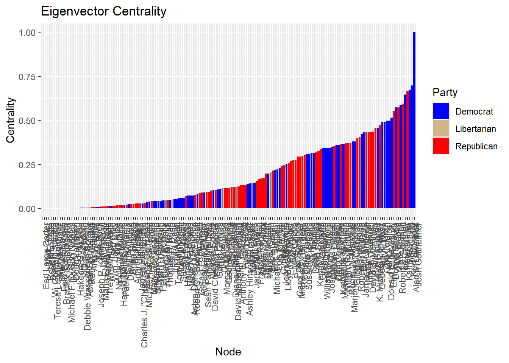
Bonacich centrality
Another less popular form of centrality, Bonacich, shows Democrats representing as much more central:
#Calculate Bonacich Power Centrality
bonacich_centrality <- power_centrality(house.ig)# Create a data frame for plotting
centrality_df <- data.frame(Node = V(house.ig)$name, Centrality = bonacich_centrality,
Party = V(house.ig)$party)
# Sort the data frame by centrality values
centrality_df <- centrality_df %>% arrange(desc(Centrality))
# Define colors based on party
party_colors <- c("Republican" = "red", "Democrat" = "blue", "Libertarian" = "tan")
# Plot the centrality values using ggplot2
ggplot(centrality_df, aes(x = reorder(Node, Centrality), y = Centrality, fill = Party)) +
geom_bar(stat = "identity") +
scale_fill_manual(values = party_colors) +
labs(title = "Bonacich Power Centrality", x = "Node", y = "Centrality") +
theme(axis.text.x = element_text(angle = 90, hjust = 1))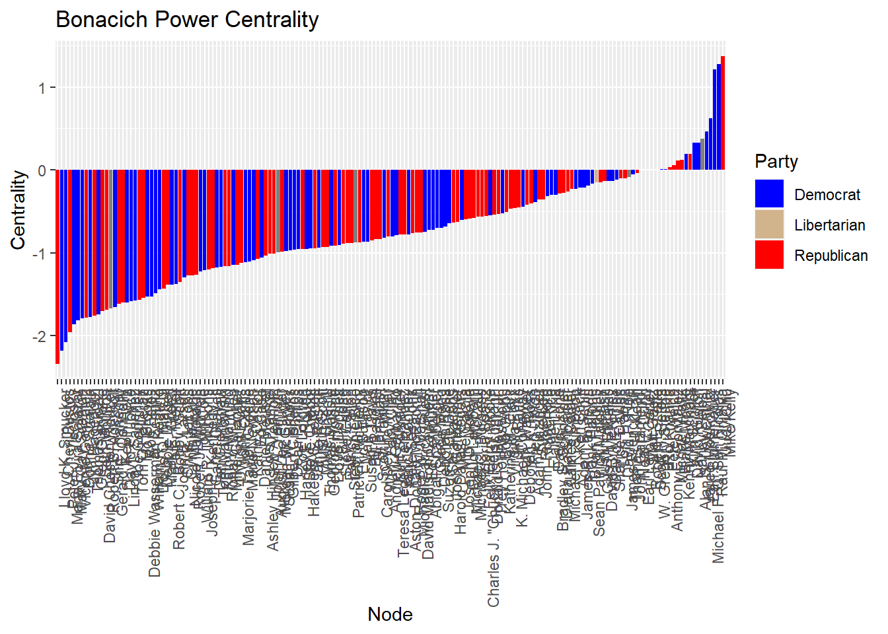
I am not confident enough in theory to take any conclusions for the Bonacich centrality, but it’s noteworthy that Democrats are so high in this measure.
Reflected Centrality
A final measure of centrality - one that R does not have built-in tools for calculating. Is reflected centrality, here represented as rc.
I am building a house.nodes dataframe that includes these common centrality measurements.
#Create a data frame with node information
house.nodes <- data.frame(
name = V(house.ig)$name,
party = V(house.ig)$party,
totdegree = igraph::degree(house.ig),
eigen_cent = igraph::evcent(house.ig)$vector,
bonacich_cent = power_centrality(house.ig)
)
# Square the adjacency matrix
matrix_house <- as.matrix(igraph::as_adjacency_matrix(house.ig))
matrix_house_sq <- matrix_house %*% t(matrix_house)
# Calculate the proportion of reflected centrality
house.nodes$rc <- diag(matrix_house_sq) / rowSums(matrix_house_sq)
house.nodes$rc <- ifelse(is.nan(house.nodes$rc), 0, house.nodes$rc)
# Calculate received eigenvalue centrality
house.nodes$eigen.rc <- house.nodes$eigen * house.nodes$rc
head(house.nodes)Next, here is a way to visualize the congresspeople based on these different metrics. The x-axis ticks are consistent, so you may trace up and down to find different measures of centrality for a specific member.
# Reshape the data to a long format
data_long <- pivot_longer(house.nodes, cols = -c(name, party), names_to = "variable", values_to = "value")
# Define the party colors
party_colors <- c("Republican" = "red", "Democrat" = "blue")
# Plot the data using ggplot2
ggplot(data_long, aes(x = name, y = value, fill = party)) +
geom_bar(stat = "identity", position = "dodge") +
facet_wrap(~variable, scales = "free_y", ncol = 1) +
scale_fill_manual(values = party_colors) +
labs(title = "Centrality Measures", x = "Name", y = "Value", fill = "Party") +
theme(axis.text.x = element_blank(),
axis.ticks.x = element_blank(),
axis.title.x = element_blank(),
axis.text.y = element_blank(),
axis.ticks.y = element_blank(),
axis.title.y = element_blank())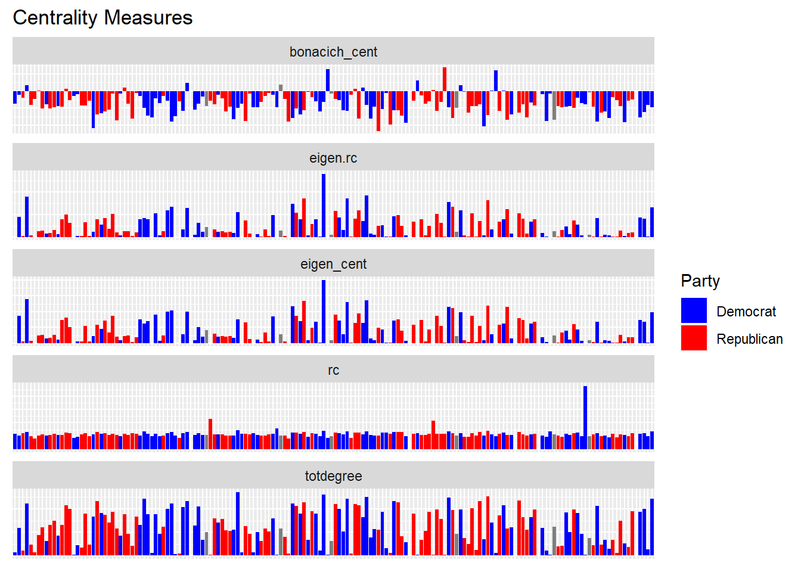
Look at that very tall measure in the rc facet: that’s Teresa Leger Fernandez who is basking in reflected centrality from David P. Joyce.
Teresa owned only one stock, Golub Capital BDC (GBDC), which by happenstance David also owned. David is a very prominent stock trader.
Component Structure
With a few more isolates than the Senate data, there are 6 components.
igraph::components(house.ig)$no[1] 6igraph::components(house.ig)$csize[1] 159 1 1 1 1 1Gould-Fernandez brokerage
There are theoretical issues with displaying Gould-Fernandez brokerage with this undirected network. Turning it into a directed network is probably unfeasible because it uses edges which are ‘unwitting’, i.e., people are not directly talking to one another. As Prof. Rolfe described, this is an ‘affiliation network’ coming from transactional data.
Measuring any kind of structural holes or brokerage is going to be problematic for the same reason.
Closeness centrality
house_closeness <- igraph::closeness(house.ig)Betweenness centrality
betweenness_centrality <- igraph::betweenness(house.ig, directed=FALSE)
head(betweenness_centrality)Michael T. McCaul Peter Meijer Peter Welch Virginia Foxx
71.2125 102.3891 173.4871 313.9308
Kenny Marchant Greg Gianforte
173.9588 237.0413 Betweenness centralization
centr_betw(house.ig,directed=F)$centralization[1] 0.03187443Constraint
house_constraint <- igraph::constraint(house.ig)
head(house_constraint)Michael T. McCaul Peter Meijer Peter Welch Virginia Foxx
0.06566913 0.05150678 0.11818294 0.06095059
Kenny Marchant Greg Gianforte
0.06201226 0.14525062 Structural equivalence
This spiffy package takes care of translating the igraph object to statnet:
library(intergraph)Warning: package 'intergraph' was built under R version 4.2.3house.stat <- asNetwork(house.ig)
house.stat Network attributes:
vertices = 164
directed = FALSE
hyper = FALSE
loops = FALSE
multiple = FALSE
bipartite = FALSE
total edges= 4846
missing edges= 0
non-missing edges= 4846
Vertex attribute names:
HLIG HLZI HSAG HSAP HSAS HSBA HSBU HSED HSFA HSGO HSHA HSHM HSIF HSII HSJU HSPW HSRU HSSM HSSO HSSY HSVR HSWM JCSE JSEC JSLC party vertex.names
Edge attribute names not shown And here I am using the average clustering method to create a cluster dendogram with each senator as a node.
library(sna)
house.se<-equiv.clust(house.stat, equiv.fun="sedist", method="hamming",mode="graph")In the cluster dendogram, we do see the highly-connected senators at least near each other:
house.complete.se<-equiv.clust(house.stat, equiv.fun="sedist", cluster.method="complete", method="hamming",mode="graph")
#plot:
plot(house.complete.se,labels=house.se$glabels)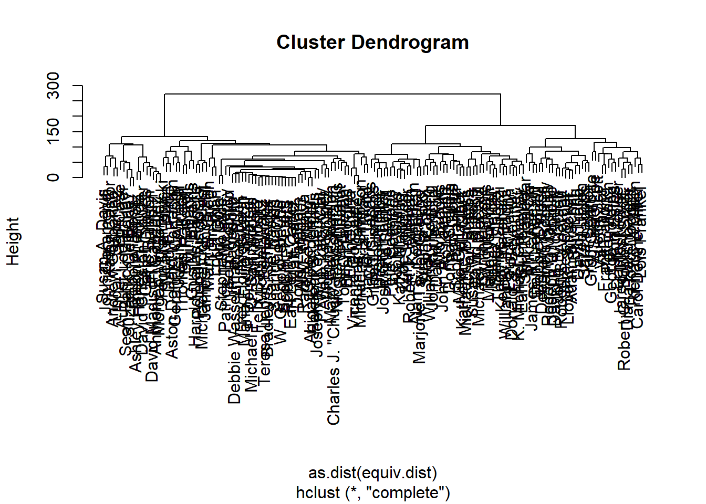

Community detection
Since I already have an undirected network, I am going to use igraph’s cluster_fast_greedy to detect community structures.
It has created 7 clusters with more than one node, which I will proceed to look at in more detail:
From the NetCommunity homework:
This method tries to detect particularly dense subgraphs by optimizing modularity scores.
#Run clustering algorithm: fast_greedy
house_comm.fg<-cluster_fast_greedy(house.ig)It has created 7 useful communities. In the next few steps I will:
- Read those communities and their attributes into dataframes
- Join the dataframes with summary statistics (house.nodes)
- Analyze differences between the communities. For example, which ones are more Republican or Democrat? Do some have super high centrality measures?
#retrieve list of nodes in communities
igraph::groups(house_comm.fg)$`1`
[1] "Dean Phillips" "Michael C. Burgess"
[3] "Lloyd K. Smucker" "Debbie Dingell"
[5] "James Comer" "Sara Jacobs"
[7] "Bob Gibbs" "Kim Schrier"
[9] "Robert J. Wittman" "Marie Newman"
[11] "John Rutherford" "Dwight Evans"
[13] "Carol Devine Miller" "Cynthia Axne"
[15] "Diana Harshbarger" "Linda T. Sanchez"
[17] "Mike Kelly" "Mary Gay Scanlon"
[19] "Charles J. \"Chuck\" Fleischmann" "Gus M. Bilirakis"
[21] "Lloyd Doggett" "Grace Meng"
[23] "Doug Lamborn" "Bradley S. Schneider"
[25] "Bill Pascrell"
$`2`
[1] "Greg Gianforte" "Josh Gottheimer"
[3] "Donna Shalala" "Donald S. Beyer, Jr."
[5] "David B. McKinley" "Zoe Lofgren"
[7] "Robert B. Aderholt" "Kevin Hern"
[9] "Susie Lee" "Richard W. Allen"
[11] "Francis Rooney" "Debbie Wasserman Schultz"
[13] "Elaine Luria" "Neal P. Dunn"
[15] "David E. Price" "Jamie Raskin"
[17] "Michael F. Q. San Nicolas" "Ann Wagner"
[19] "James French Hill" "Vicente Gonzalez"
[21] "Patrick T. McHenry" "Jim Hagedorn"
[23] "Thomas Massie"
$`3`
[1] "Michael K. Simpson" "Mike Garcia" "Patrick Fallon"
[4] "Mark E. Green" "James R. Langevin" "Adam Kinzinger"
[7] "Kathy Castor" "Joe Courtney" "William R. Timmons"
[10] "Scott Franklin" "Daniel Meuser" "Felix Barry Moore"
[13] "Brian Mast" "David P. Joyce" "Austin Scott"
[16] "Maria Elvira Salazar" "Justin Amash" "Jim Banks"
[19] "Sharice Davids" "Hakeem S. Jeffries" "Teresa Leger Fernandez"
$`4`
[1] "Michael T. McCaul" "Peter Meijer" "Peter Welch"
[4] "Thomas Suozzi" "Pete Sessions" "Ed Perlmutter"
[7] "Alan S. Lowenthal" "Nancy Pelosi" "Mo Brooks"
[10] "David Trone" "Earl Blumenauer" "Ro Khanna"
[13] "Garret Graves" "Cheri Bustos" "Judy Chu"
[16] "David Kustoff" "Eric Burlison" "Anthony E. Gonzalez"
[19] "Ashley Hinson Arenholz" "David Madison Cawthorn" "David Cheston Rouzer"
[22] "Harley E. Rouda" "Morgan McGarvey" "Andrew Garbarino"
[25] "Harold Dallas Rogers" "Michael Waltz" "John Garamendi"
[28] "Brian Higgins" "Stephanie Bice"
$`5`
[1] "K. Michael Conaway" "John Curtis" "Gilbert Cisneros"
[4] "Chris Jacobs" "Billy Long" "Adam B. Schiff"
[7] "Joseph D. Morelle" "Dan Crenshaw" "Shri Thanedar"
[10] "Abigail Spanberger" "Doris O. Matsui" "Steve Chabot"
$`6`
[1] "Kathy Manning" "Kurt Schrader" "Mike Gallagher"
[4] "Deborah K. Ross" "Katherine M. Clark" "Marjorie Taylor Greene"
[7] "Blake Moore" "Susan W. Brooks" "John A. Yarmuth"
[10] "Roger W. Marshall" "Victoria Spartz" "Seth Moulton"
[13] "August Lee Pfluger" "Susan A. Davis" "Van Taylor"
[16] "Trey Hollingsworth" "Ed Case" "Tom Rice"
[19] "Lori Trahan" "Ken Buck"
$`7`
[1] "Virginia Foxx" "Kenny Marchant"
[3] "Fred Upton" "Mikie Sherrill"
[5] "William R. Keating" "Lois Frankel"
[7] "Jared Moskowitz" "John B. Larson"
[9] "Tom Malinowski" "Thomas H. Kean"
[11] "Robert C. \"Bobby\" Scott" "Sean Patrick Maloney"
[13] "Aston Donald McEachin" "Steve Cohen"
[15] "George Holding" "Michael Patrick Guest"
[17] "Frank Pallone" "David P. Roe"
[19] "Tom O'Halleran" "Raúl M. Grijalva"
[21] "Peter J. Visclosky" "Wm. Lacy Clay"
[23] "Ron Estes" "Gerald E. Connolly"
[25] "Suzan K. DelBene" "Deborah Ross"
[27] "Joseph P. Kennedy III" "Nicole Malliotakis"
[29] "Tom Cole"
$`8`
[1] "Earl Leroy Carter"
$`9`
[1] "Matt Gaetz"
$`10`
[1] "Robert E. Latta"
$`11`
[1] "Scott H. Peters"
$`12`
[1] "W. Gregory Steube"house_community_1 <- as.data.frame(house_comm.fg[1])
house_community_2 <- as.data.frame(house_comm.fg[2])
house_community_3 <- as.data.frame(house_comm.fg[3])
house_community_4 <- as.data.frame(house_comm.fg[4])
house_community_5 <- as.data.frame(house_comm.fg[5])
house_community_6 <- as.data.frame(house_comm.fg[6])
house_community_7 <- as.data.frame(house_comm.fg[7])In this step, I bring some of the information from house.nodes, my dataframe of summary stats:
house_community_1 <- as.data.frame(house_comm.fg[1]) %>% left_join(house.nodes, by = c("X1"= "name")) %>% rename("name" = "X1")
house_community_2 <- as.data.frame(house_comm.fg[2]) %>% left_join(house.nodes, by = c("X2"= "name")) %>% rename("name" = "X2")
house_community_3 <- as.data.frame(house_comm.fg[3]) %>% left_join(house.nodes, by = c("X3"= "name")) %>% rename("name" = "X3")
house_community_4 <- as.data.frame(house_comm.fg[4]) %>% left_join(house.nodes, by = c("X4"= "name")) %>% rename("name" = "X4")
house_community_5 <- as.data.frame(house_comm.fg[5]) %>% left_join(house.nodes, by = c("X5"= "name")) %>% rename("name" = "X5")
house_community_6 <- as.data.frame(house_comm.fg[6]) %>% left_join(house.nodes, by = c("X6"= "name")) %>% rename("name" = "X6")
house_community_7 <- as.data.frame(house_comm.fg[7]) %>% left_join(house.nodes, by = c("X7"= "name")) %>% rename("name" = "X7")Here is an example community:
house_community_3…and can compare with this function….
summarize_data <- function(df) {
df_summary <- df %>%
summarise(
pct_republican = sum(party == "Republican") / n() * 100,
pct_democrat = sum(party == "Democrat") / n() * 100,
avg_totdegree = mean(totdegree),
avg_eigen_cent = mean(eigen_cent),
avg_bonacich_cent = mean(bonacich_cent),
avg_rc = mean(rc),
avg_eigen_rc = mean(eigen.rc)
)
return(df_summary)
}summarize_data(house_community_1)summarize_data(house_community_2)summarize_data(house_community_3)summarize_data(house_community_4)summarize_data(house_community_5)summarize_data(house_community_6)summarize_data(house_community_7)Now I see that, indeed, some of these communities display different characteristics than others. For example, community 7 is 62% Democrat. Still, the community with the highest degree (5) is still more or less split between Deomcrats and Republicans.
Plotting with community clustering
The ‘hairball’ graph is less interesting to visualize with community clustering. Visualizing the graph which had a 100-threshold for degree is more interesting, however:
filtered_house_comm.fg<-cluster_fast_greedy(filtered_house.ig)
plot(filtered_house_comm.fg,filtered_house.ig)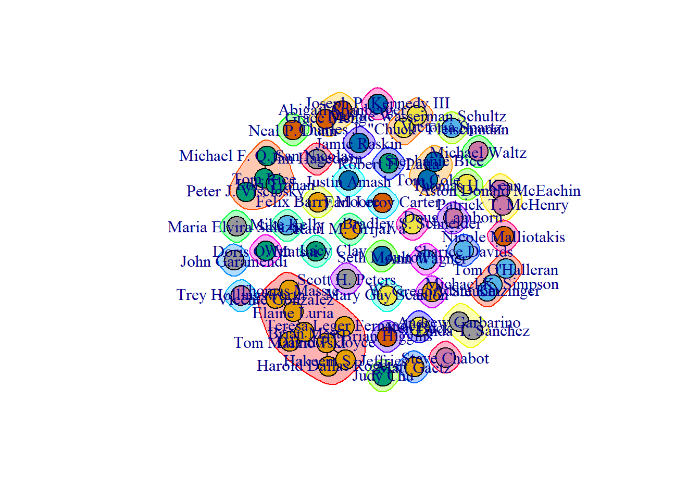
Blockmodeling
Here are results of blockmodeling, indicating clear and consistent relationships between all pairs of blocks:
blockmodel(house.stat,house_comm.fg$membership)$block.model Block 1 Block 2 Block 3 Block 4 Block 5 Block 6 Block 7
Block 1 0.4766667 0.3686957 0.2971429 0.4179310 0.4833333 0.4740000 0.3641379
Block 2 0.3686957 0.3992095 0.2401656 0.3628186 0.4239130 0.3782609 0.3403298
Block 3 0.2971429 0.2401656 0.3238095 0.3185550 0.3809524 0.3261905 0.2282430
Block 4 0.4179310 0.3628186 0.3185550 0.5640394 0.5086207 0.4482759 0.3483948
Block 5 0.4833333 0.4239130 0.3809524 0.5086207 0.5909091 0.5083333 0.3908046
Block 6 0.4740000 0.3782609 0.3261905 0.4482759 0.5083333 0.5368421 0.4310345
Block 7 0.3641379 0.3403298 0.2282430 0.3483948 0.3908046 0.4310345 0.4113300
Block 8 0.0000000 0.0000000 0.0000000 0.0000000 0.0000000 0.0000000 0.0000000
Block 9 0.0000000 0.0000000 0.0000000 0.0000000 0.0000000 0.0000000 0.0000000
Block 10 0.0000000 0.0000000 0.0000000 0.0000000 0.0000000 0.0000000 0.0000000
Block 11 0.0000000 0.0000000 0.0000000 0.0000000 0.0000000 0.0000000 0.0000000
Block 12 0.0000000 0.0000000 0.0000000 0.0000000 0.0000000 0.0000000 0.0000000
Block 8 Block 9 Block 10 Block 11 Block 12
Block 1 0 0 0 0 0
Block 2 0 0 0 0 0
Block 3 0 0 0 0 0
Block 4 0 0 0 0 0
Block 5 0 0 0 0 0
Block 6 0 0 0 0 0
Block 7 0 0 0 0 0
Block 8 NaN 0 0 0 0
Block 9 0 NaN 0 0 0
Block 10 0 0 NaN 0 0
Block 11 0 0 0 NaN 0
Block 12 0 0 0 0 NaNWalktrap community detection
This looks more or less the same:
#Run clustering algorithm: walktrap
comm.wt<-walktrap.community(house.ig)
#Inspect community membership
igraph::groups(comm.wt)$`1`
[1] "Michael T. McCaul" "Peter Meijer"
[3] "Greg Gianforte" "Josh Gottheimer"
[5] "Donna Shalala" "Donald S. Beyer, Jr."
[7] "Pete Sessions" "Kathy Manning"
[9] "Kurt Schrader" "John Curtis"
[11] "Debbie Dingell" "Ed Perlmutter"
[13] "Sara Jacobs" "Alan S. Lowenthal"
[15] "Robert J. Wittman" "Nancy Pelosi"
[17] "Gilbert Cisneros" "Zoe Lofgren"
[19] "Mike Gallagher" "Katherine M. Clark"
[21] "William R. Timmons" "Marjorie Taylor Greene"
[23] "Blake Moore" "Billy Long"
[25] "David Trone" "Robert B. Aderholt"
[27] "Susan W. Brooks" "Adam B. Schiff"
[29] "Joseph D. Morelle" "Earl Blumenauer"
[31] "Roger W. Marshall" "Dan Crenshaw"
[33] "Kevin Hern" "Dwight Evans"
[35] "Daniel Meuser" "Ro Khanna"
[37] "Carol Devine Miller" "Garret Graves"
[39] "Susie Lee" "Diana Harshbarger"
[41] "Debbie Wasserman Schultz" "Cheri Bustos"
[43] "David Kustoff" "Eric Burlison"
[45] "Anthony E. Gonzalez" "Ashley Hinson Arenholz"
[47] "David Cheston Rouzer" "Harley E. Rouda"
[49] "Morgan McGarvey" "Shri Thanedar"
[51] "Sean Patrick Maloney" "Seth Moulton"
[53] "Elaine Luria" "Neal P. Dunn"
[55] "Harold Dallas Rogers" "Charles J. \"Chuck\" Fleischmann"
[57] "John Garamendi" "Suzan K. DelBene"
[59] "Deborah Ross" "Brian Higgins"
[61] "Ann Wagner" "James French Hill"
[63] "Vicente Gonzalez" "Steve Chabot"
[65] "Thomas Massie"
$`2`
[1] "Patrick Fallon" "James R. Langevin" "Kathy Castor"
$`3`
[1] "Virginia Foxx" "Kenny Marchant" "Dean Phillips"
[4] "Mike Garcia" "K. Michael Conaway" "Marie Newman"
[7] "Joe Courtney" "Tom O'Halleran" "Justin Amash"
[10] "Trey Hollingsworth"
$`4`
[1] "Peter Welch" "David B. McKinley"
[3] "Fred Upton" "Mikie Sherrill"
[5] "Lois Frankel" "Richard W. Allen"
[7] "Francis Rooney" "Jared Moskowitz"
[9] "Tom Malinowski" "Thomas H. Kean"
[11] "Robert C. \"Bobby\" Scott" "Aston Donald McEachin"
[13] "August Lee Pfluger" "Andrew Garbarino"
[15] "Michael Patrick Guest" "David P. Roe"
[17] "David E. Price" "Peter J. Visclosky"
[19] "Wm. Lacy Clay" "Mary Gay Scanlon"
[21] "Gerald E. Connolly" "Joseph P. Kennedy III"
[23] "Tom Cole" "Stephanie Bice"
[25] "Patrick T. McHenry"
$`5`
[1] "Michael C. Burgess" "Thomas Suozzi" "Lloyd K. Smucker"
[4] "James Comer" "Bob Gibbs" "Kim Schrier"
[7] "Mo Brooks" "Deborah K. Ross" "Chris Jacobs"
[10] "Scott Franklin" "John A. Yarmuth" "John Rutherford"
[13] "William R. Keating" "Cynthia Axne" "John B. Larson"
[16] "Steve Cohen" "Linda T. Sanchez" "George Holding"
[19] "Van Taylor" "Frank Pallone" "Ron Estes"
[22] "Jim Banks" "Gus M. Bilirakis" "Ed Case"
[25] "Lloyd Doggett" "Bill Pascrell" "Nicole Malliotakis"
$`6`
[1] "Tom Rice" "Lori Trahan"
$`7`
[1] "Grace Meng" "Abigail Spanberger"
$`8`
[1] "Michael K. Simpson"
$`9`
[1] "Mark E. Green"
$`10`
[1] "Adam Kinzinger"
$`11`
[1] "Felix Barry Moore"
$`12`
[1] "Victoria Spartz"
$`13`
[1] "Judy Chu"
$`14`
[1] "Brian Mast"
$`15`
[1] "David P. Joyce"
$`16`
[1] "David Madison Cawthorn"
$`17`
[1] "Austin Scott"
$`18`
[1] "Susan A. Davis"
$`19`
[1] "Michael Waltz"
$`20`
[1] "Maria Elvira Salazar"
$`21`
[1] "Raúl M. Grijalva"
$`22`
[1] "Mike Kelly"
$`23`
[1] "Earl Leroy Carter"
$`24`
[1] "Matt Gaetz"
$`25`
[1] "Sharice Davids"
$`26`
[1] "Robert E. Latta"
$`27`
[1] "Ken Buck"
$`28`
[1] "Jamie Raskin"
$`29`
[1] "Doug Lamborn"
$`30`
[1] "Scott H. Peters"
$`31`
[1] "Hakeem S. Jeffries"
$`32`
[1] "Michael F. Q. San Nicolas"
$`33`
[1] "W. Gregory Steube"
$`34`
[1] "Doris O. Matsui"
$`35`
[1] "Bradley S. Schneider"
$`36`
[1] "Jim Hagedorn"
$`37`
[1] "Teresa Leger Fernandez"compare.algs<-function(alg.a,alg.b,compare.meth=c("vi", "nmi", "split.join", "rand", "adjusted.rand")){
#create list of community objects and methods
comm.compare<-expand.grid(alg.a=alg.a, alg.b=alg.b, meth=compare.meth, result=NA, stringsAsFactors = FALSE)
#compare community partitions using a loop
for(i in 1:nrow(comm.compare)){
comm1<-get(comm.compare$alg.a[i])
comm2<-get(comm.compare$alg.b[i])
method<-comm.compare$meth[i]
comm.compare$result[i]<-compare(comm1, comm2, method)
}
return(comm.compare)
}Comparing walktrap and fast-greedy is non-conclusive:
#compare community partitions
compare.algs(alg.a=c("house_comm.fg"),alg.b="comm.wt")Hypothesis testing
For a start, I will use the null hypothesis that this graph is no more clustered than one generated by chance. To do that, I’ll use a Conditional Uniform Graph (CUG test).
These three graphs indicate whether house.ig is different from a random graph by the metric of transitivity, based on random graphs of the same size, # of edges, and # of dyads, respectively. It uses 1000 repetitions of random graph generation to generate the distribtions on the left, which you may barely be able to see.
CUG tests
cug_size <- cug.test(house.stat,gtrans,cmode="size")
cug_edges <- cug.test(house.stat,gtrans,cmode="edges")
cug_dyads <- cug.test(house.stat,gtrans,cmode="dyad.census")par(mfrow=c(1,3))
plot(cug_size, main="Transitivity \nConditioned on Size" )
plot(cug_edges, main="Transitivity \nConditioned on Edges" )
plot(cug_dyads, main="Transitivity \nConditioned on Dyads" )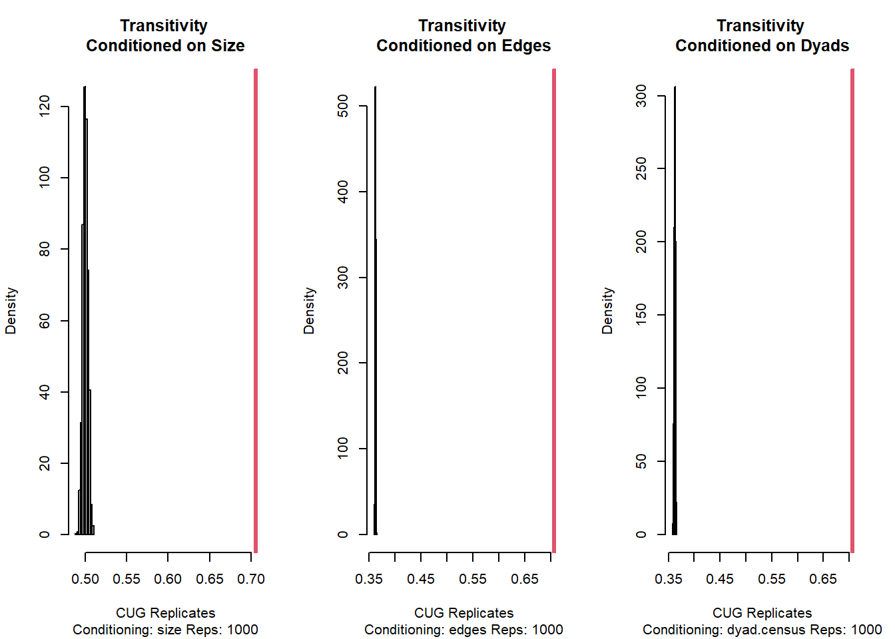
par(mfrow=c(1,1))The red line is the network transitivity, as found by statnet’s `gtrans`.
gtrans(house.stat)[1] 0.7055383Clearly the graph is much more clustered than it would be by chance.
How about using betweenness centralization as a metric, instead of transitivity?
cugBetSize <- cug.test(house.stat,
centralization,
FUN.arg=list(FUN=betweenness),
mode="graph",
cmode="size")
cugBetEdges <- cug.test(house.stat,
centralization,
FUN.arg=list(FUN=betweenness),
mode="graph",
cmode="edges")
cugBetDyad <- cug.test(house.stat,
centralization,
FUN.arg=list(FUN=betweenness),
mode="graph",
cmode="dyad.census")par(mfrow=c(1,3))
plot(cugBetSize, main="Betweenness \nConditioned on Size" )
plot(cugBetEdges, main="Betweenness \nConditioned on Edges" )
plot(cugBetDyad, main="Betweenness \nConditioned on Dyads" )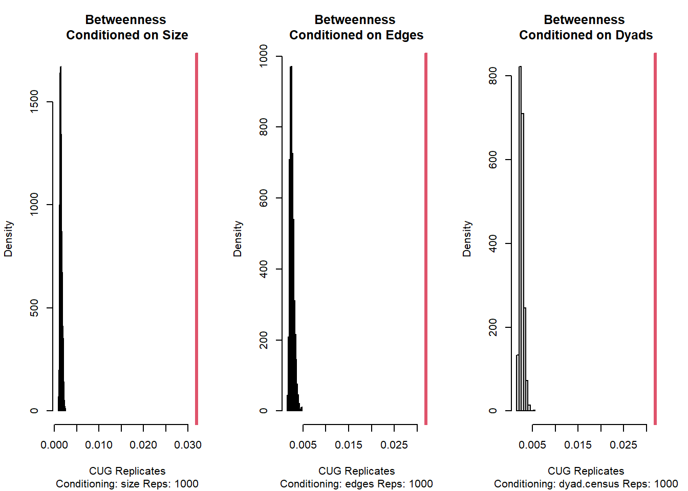
par(mfrow=c(1,1))So overall, we can tentatively say there is evidence against the null hypothesis that the graph is not different than one generated by chance. However, I am not sure this really means anything for us, as the way we have gathered data is unconventional.
OLS Regression
Here’s another null hypothesis: Committee membership is not associated with centrality (here, degree):
house.nodes_full <- house.nodes %>%
left_join(vertices_df_joined, by = c("name" = "representative")) %>%
mutate_at(vars(10:33), as.logical)
fit1 <- lm(totdegree ~ . - name, data = house.nodes_full)
summary(fit1)
Call:
lm(formula = totdegree ~ . - name, data = house.nodes_full)
Residuals:
Min 1Q Median 3Q Max
-66.212 -13.632 -0.284 11.650 50.628
Coefficients: (5 not defined because of singularities)
Estimate Std. Error t value Pr(>|t|)
(Intercept) 25.7751 6.5670 3.925 0.000139 ***
party.xJackson 4.1057 21.6319 0.190 0.849760
party.xLibertarian -4.0227 23.9850 -0.168 0.867065
party.xMissing 2.2941 11.2009 0.205 0.838039
party.xRepublican -0.2387 3.6907 -0.065 0.948526
eigen_cent 113.6675 88.3028 1.287 0.200278
bonacich_cent -3.4483 2.8134 -1.226 0.222524
rc 80.3595 450.9594 0.178 0.858844
eigen.rc 3802.9010 6848.8902 0.555 0.579665
party.yJackson NA NA NA NA
party.yLibertarian NA NA NA NA
party.yMissing NA NA NA NA
party.yRepublican NA NA NA NA
HSFA -1.0908 9.8210 -0.111 0.911731
HSHMTRUE 3.3486 13.2110 0.253 0.800301
HSSYTRUE 8.4777 11.0951 0.764 0.446184
HSGOTRUE 0.2914 10.7380 0.027 0.978389
HSIFTRUE -9.5501 6.8979 -1.384 0.168560
HSEDTRUE 8.2583 8.7145 0.948 0.345052
HSRUTRUE 32.3368 14.6258 2.211 0.028775 *
HSSOTRUE 22.6036 16.3886 1.379 0.170174
HSWMTRUE 1.1638 9.7980 0.119 0.905632
HSAPTRUE -22.8454 8.5303 -2.678 0.008352 **
HLIGTRUE -18.3488 20.7509 -0.884 0.378185
HSAGTRUE 24.2096 11.1550 2.170 0.031787 *
HSASTRUE -9.2653 7.5985 -1.219 0.224896
HSBUTRUE 9.9315 12.4194 0.800 0.425344
JCSETRUE 13.4360 19.2029 0.700 0.485366
HSIITRUE -10.9493 9.4494 -1.159 0.248672
HSBATRUE -5.6396 11.7307 -0.481 0.631490
HSPWTRUE 9.6704 9.5963 1.008 0.315448
HSHATRUE 45.2669 39.1348 1.157 0.249503
HSJUTRUE -13.5965 10.1370 -1.341 0.182153
JSLCTRUE -29.0660 29.8963 -0.972 0.332729
HLZITRUE -4.4243 21.7494 -0.203 0.839122
HSSMTRUE -18.6475 13.6984 -1.361 0.175761
HSVRTRUE 15.9599 13.5016 1.182 0.239316
JSECTRUE NA NA NA NA
---
Signif. codes: 0 '***' 0.001 '**' 0.01 '*' 0.05 '.' 0.1 ' ' 1
Residual standard error: 21.27 on 131 degrees of freedom
Multiple R-squared: 0.766, Adjusted R-squared: 0.7088
F-statistic: 13.4 on 32 and 131 DF, p-value: < 2.2e-16Here we see that membership in House Committee on Rules, House Committee on Appropriations, and House Committee on Agriculture could have an impact on degree.
At least on its face, there could be an association between membership in these committees and degree in the house.ig network.
Conclusions
I am a little cautious to take any conclusions from this exercise in network analysis. The issue of this network being affiliation-based, rather than naturally examined from interactions in the field, makes reasoning a little shaky. But, I am still glad to make some observations:
Overall, there is not much difference between Democrats and Republicans’ stock-trading habits, and this is borne out by the fact that both parties have been stymieing further legislation to the STOCK Act.
Democrats do tend to be more connected with each other on the high-end, while on the low-end, affiliations between congresspeople appears more random.
The uniform distribution of degree is an interesting subject for additional interpretation or explanation. Why doesn’t it look like a ‘power law’ distribution?
Is there anything about the certain committees picked out by regression that lends themselves to higher connectivity?
One appealing thing about this project is that it can be re-run dynamically with new information as it becomes available. If I were to take this further, I would continue the regression approach by also looking at industry type, after consolidating industries down to a reasonable number based on NAICS codes. For example, do congresspeople trade stocks in certain industries associated with their own congressional oversight?
---
Thanks for the class! Have a good summer.
-Steve
Sources
1. Krueger, Andrew. “THE STOCK ACT TEN YEARS LATER: THE NEED FOR A NEW CONGRESSIONAL INSIDER TRADING REGULATORY SCHEME.” Washington University Law Review, vol. 100, no. 2, Oct. 2022, pp. 545+. Gale Academic OneFile, link.gale.com/apps/doc/A730212044/AONE?u=mlin_w_umassamh&sid=ebsco&xid=7b07d9b0. Accessed 18 May 2023.
2. “Fact Sheet: The Stock Act: BANS Members of Congress from Insider Trading.” National Archives and Records Administration, obamawhitehouse.archives.gov/the-press-office/2012/04/04/fact-sheet-stock-act-bans-members-congress-insider-trading. Accessed 18 May 2023.
3. What’s Trading on Capitol Hill? - Capitol Trades. (n.d.). What’s Trading on Capitol Hill? - Capitol Trades. https://www.capitoltrades.com/
4. Kelly, K., Playford, A., Parlapiano, A., & Uz, E. (2022, September 13). Stock Trades Reported by Nearly a Fifth of Congress Show Possible Conflicts. The New York Times. https://www.nytimes.com/interactive/2022/09/13/us/politics/congress-stock-trading-investigation.html
5. Markay, L., Bredderman, W., & Brodey, S. (2020, March 20). Sen. Kelly Loeffler Dumped Millions in Stock After Coronavirus Briefing. The Daily Beast. https://www.thedailybeast.com/sen-kelly-loeffler-dumped-millions-in-stock-after-coronavirus-briefing
6. Stankiewicz, K., & Higgins, T. (2020, March 20). GOP Sen. Hoeven bought up to $250,000 in health sciences fund days after coronavirus briefing. CNBC. https://www.cnbc.com/2020/03/20/coronavirus-gop-sen-hoeven-bought-up-to-250000-in-health-fund-after-briefing.html
7. Stankiewicz, K., & Higgins, T. (2020b, March 20). GOP Sen. Hoeven bought up to $250,000 in health sciences fund days after coronavirus briefing. CNBC. https://www.cnbc.com/2020/03/20/coronavirus-gop-sen-hoeven-bought-up-to-250000-in-health-fund-after-briefing.html
8. Outside Ethics Group Says 7 House Lawmakers Didn’t Disclose Stock Trades. (2021, September 22). NPR. https://www.npr.org/2021/09/22/1039287987/outside-ethics-group-says-7-house-lawmakers-didnt-disclose-stock-trades
9. Senate Investments. (n.d.). Kaggle: Your Machine Learning and Data Science Community. https://www.kaggle.com/datasets/heresjohnnyv/congress-investments